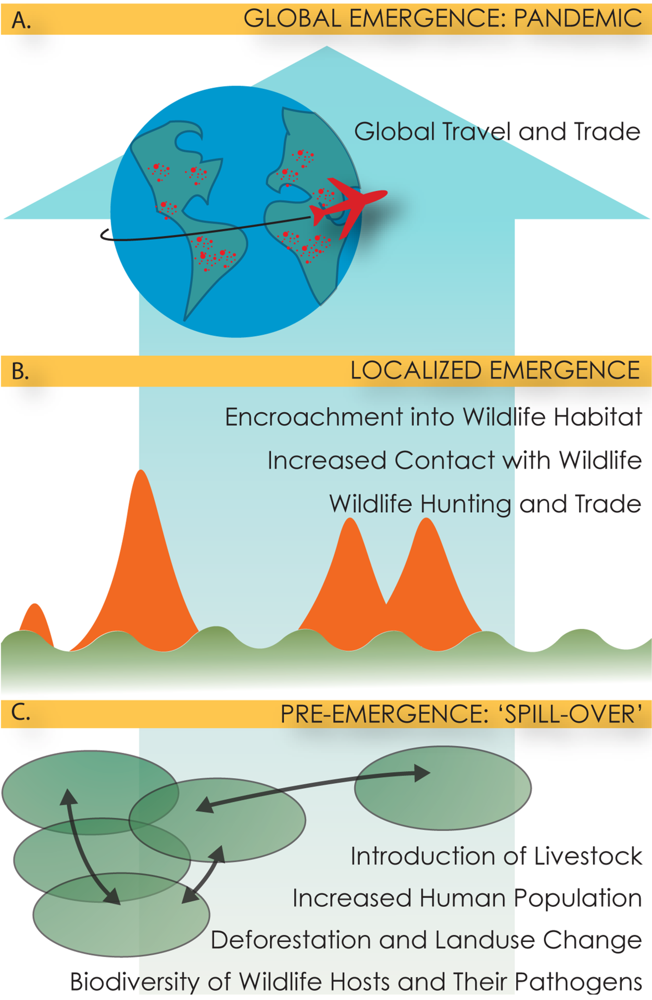
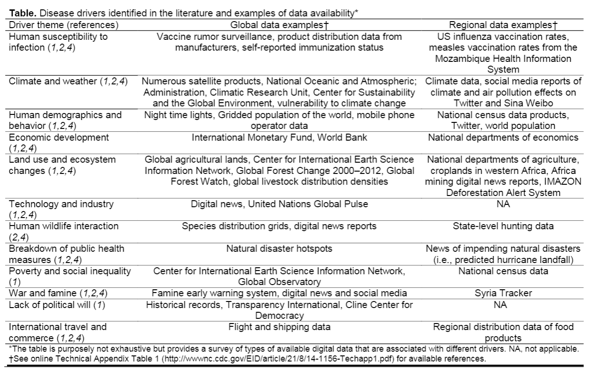
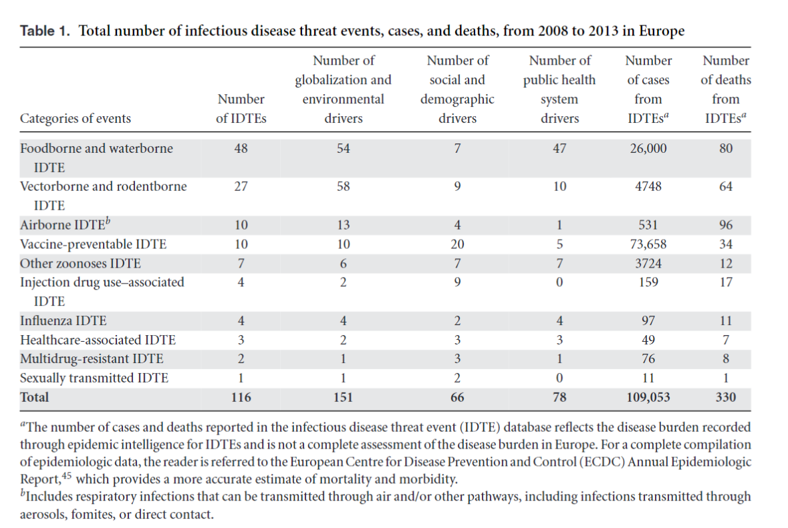
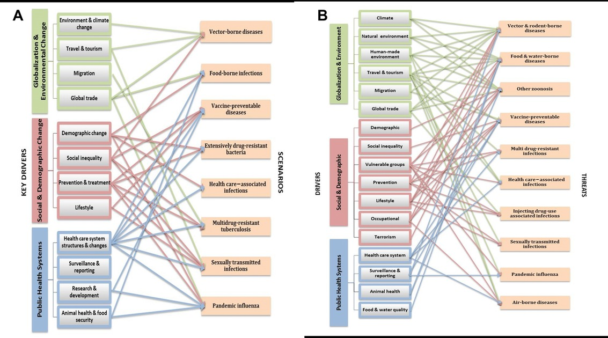

This is a Quarto reproduction of a paper investigating drivers of EPP under the INFLUX project
Introduction
Unusual infectious disease (ID) events occur when an underlying mix of antecedent epidemiological drivers provide the necessary conditions for a pathogen to emerge in susceptible populations. These conditions may be driving emergence through a wide variety of mechanisms, such as climate change, industrial development, ecosystem change, and social inequality. Public health policy has traditionally targeted well-described socioeconomic drivers, such as lack of sanitation, lack of hygiene awareness, and poor access to health care and disease prevention services (e.g., bed nets, vaccinations, and treatments),but researchers have increasingly evaluated the complex interactions among drivers related to globalization, political issues, human susceptibility, and biophysical environmental change (Olson et al. 2015)

Across 397 outbreaks of international concern, as classified by the World HealthOrganization, nearly 40% were attributed to 1 driver: lack of public health infrastructure (Bogich et al. 2012a). Further, changes in land use, another known driver, can produce animal–human interfaces ripe for spillover events. Indeed, between1940 and 2005, 60% of emerging ID events were of zoonotic origin and showed a substantial positive correlation with wildlife abundance and diversity. In 2008, the European Centre for Disease Prevention and Control (ECDC) conducted a literature- and expert-based foresight study to identify environmental, socioeconomic, and technical changes that will contribute to future EIDs in Europe. The study projected that the drivers of most concern would fall into three main groups: globalization and environment, social and demographic, and public health systems. (Semenza et al. 2016)
Driving Factors Description (Bogich et al. 2012b). Drivers were assigned on the basis of a text search of the outbreak reports for key words and phrases indicating an IOM-defined driver directly or inferred from text describing actions taken immediately following the outbreak
| Agricultural & Food industry changes |
Agricultural intensification of crops or animal husbandry and all aspects of food production from manufacturing to marketing; global trade and travel related to food are included here |
| Breakdown of public Health measures |
Breakdown in public health measures that have previously worked to prevent infections, including inadequate sanitation and hygiene (e.g. shortages of potable water), poor immunization coverage or lack of infrastructure to purchase and deliver vaccine, TB control, control of vector-borne and zoonotic disease, and antiquated public health laws |
| Bushmeat |
Both hunting and consumption of wildlife, including tracking, capturing and handling involved in hunting |
| Climate and weather |
Short- and long-term fluctuations in temperature and rainfall affecting pathogens, vectors and hosts |
| Human demographics and behavior |
Demographic and behavioral factors that affect human transmission of disease, examples include migration, population growth, aging, urbanization, and high-risk behaviors |
| Human susceptibility to infection |
Elements of human physiology that determine susceptibility, including genetic, physical, cellular and molecular defenses. Examples include malnutrition, impaired immunity, genetic polymorphisms |
| Intent to harm |
Bioterrorism or threat of attack using biological agents, typically via aerosol dissemination |
| International travel and commerce |
Movement of humans and animals and other goods, including volume and speed of air travel, cruise ships - does not include global travel and trade related to food |
| Lack of political will |
Lack of global political commitment and general complacency toward infectious diseases |
| Land use changes |
Changes in land use patterns due to anthropogenic activities, including encroachment, expansion of agricultural activities or urban areas, deforestation, dams and irrigation infrastructure, or reforestation |
| Medical Industry changes |
Advances in the medical industry such as blood transfusions, use of plastic catheters or artificial heart valves); other examples include blood product safety, organ, tissue and xeno-transplantation |
| Microbial adaptation and change |
Antibiotic use and resistance |
| War and famine |
Armed conflict, loss of food security, and handicapping of medical infrastructure due to conflict, including the displacement of humans to refugee camps, for example, during war times |
| Unspecified |
Unable to assign driver |

The ECDC is mandated to monitor Infectious disease threat events (IDTEs) through epidemic intelligence or event-based surveillance, which involves active and automated Web searches from confidential and official sources, such as the Early Warning and Response System (EWRS), Program for Monitoring Emerging Diseases (Promed), Medical Information System (MediSys), and Global Public Health Intelligence Network (GPHIN), as well as individual reports from European Union (EU)/European Economic Area (EEA) member states (Semenza et al. 2016). The IDTEs that met the inclusion criteria were divided into 10 categories: foodborne and waterborne; vectorborne and rodentborne; airborne; vaccine preventable; other zoonoses; injecting drug use (IDU) associated; influenza; healthcare associated; multidrug resistant; and sexually transmitted


Methods
Data were retrieved from WHO-DON API.
Rows: 18,612
Columns: 5
$ DonID_standardized <chr> "2024-DON518", "2024-DON518", "2024-DON518", "2024-…
$ UrlName <chr> "2024-DON518", "2024-DON518", "2024-DON518", "2024-…
$ DonId <chr> "2024-DON518", "2024-DON518", "2024-DON518", "2024-…
$ InformationType <chr> "Summary", "Overview", "Epidemiology", "Assessment"…
$ Text <chr> "As of 30 April 2024, over 7.6 million dengue cases…
Source: Scraping data from WHO-DON website
Data retrieved from WHO-DON can merge with data from (Carlson et al. 2023)
To extract causality relations, one can choose BERT or LLMs. The LLM is more advance (Gopalakrishnan et al. 2023)
Causality extraction is the process of extracting the cause and effect from a sentence. In the past few years, much work on causality extraction has been done, but still, it remains a challenging task. A survey on the extraction of causal relations from text [5] categorizes the existing methodologies into knowledge-based, statistical machine learning-based, and deep learning-based methodologies. We briefly show the diversity of these approaches below.
Earlier works in the area of causality extraction used rules and linguistic features to extract cause/effect tuples [6,7,8]. Machine learning models can also be used to extract causality from text. Linguistic features, such as verb pair rules, etc., as well as discourse features, can be used to train classifiers, such as Naive Bayes and Support Vector machines [9,10]. In recent times deep learning-based models have been used to extract causalities from text [11,12,13].
Causalities can be extracted at sentence level (intra-sentence) [14,15,16,17], or across sentences (inter-sentence) [18,19,20]. A model can classify a sentence as being causal-based on the presence of an explicit connective (explicit causality) [11,13,21]. In the absence of causal connectives, semantic information can be used to find the causalities (which is called implicit causality) [22,23].
A recent work on causality extraction [12] extends the SemEval 2010 Task 8 dataset by adding more data and uses BILSTM-CRF with Flair embeddings [24] to extract cause/effect relationships. A similar work [25] uses CNN on the SemEval-2010 Task 8 dataset [26], Causal-TimeBank dataset [27], and Event StoryLine dataset [28], whereas [29] uses a Recursive Neural Tensor Network (RNTN) model [30]. Some of the works consider causality extraction as a span extraction or sequence labeling task [31]. CausalizeR [32] is a similar work that extracts the causal relationships from literature, based on grammatical rules.
Finally, the emergence of large language models creates a new environment for extracting causality-related information
References
Bogich, Tiffany L., Rumi Chunara, David Scales, Emily Chan, Laura C. Pinheiro, Aleksei A. Chmura, Dennis Carroll, Peter Daszak, and John S. Brownstein. 2012a.
“Preventing Pandemics Via International Development: A Systems Approach.” PLOS Medicine 9 (12): e1001354.
https://doi.org/10.1371/journal.pmed.1001354.
———. 2012b.
“Preventing Pandemics Via International Development: A Systems Approach.” PLOS Medicine 9 (12): e1001354.
https://doi.org/10.1371/journal.pmed.1001354.
Carlson, Colin J., Matthew R. Boyce, Margaret Dunne, Ellie Graeden, Jessica Lin, Yasser Omar Abdellatif, Max A. Palys, Munir Pavez, Alexandra L. Phelan, and Rebecca Katz. 2023.
“The World Health Organization’s Disease Outbreak News: A Retrospective Database.” Edited by Claudio A. Mendez.
PLOS Global Public Health 3 (1): e0001083.
https://doi.org/10.1371/journal.pgph.0001083.
Gopalakrishnan, Seethalakshmi, Victor Zitian Chen, Wenwen Dou, Gus Hahn-Powell, Sreekar Nedunuri, and Wlodek Zadrozny. 2023.
“Text to Causal Knowledge Graph: A Framework to Synthesize Knowledge from Unstructured Business Texts into Causal Graphs.” Information 14 (7): 367.
https://doi.org/10.3390/info14070367.
Olson, Sarah, Corey Benedum, Sumiko Mekaru, Nicholas Preston, Jonna Mazet, Damien Joly, and John Brownstein. 2015.
“Drivers of Emerging Infectious Disease Events as a Framework for Digital Detection.” Emerging Infectious Diseases 21 (August): 1285–92.
https://doi.org/10.3201/eid2108.141156.
Semenza, Jan C., Joacim Rocklöv, Pasi Penttinen, and Elisabet Lindgren. 2016.
“Observed and Projected Drivers of Emerging Infectious Diseases in Europe.” Annals of the New York Academy of Sciences 1382 (1): 73–83.
https://doi.org/10.1111/nyas.13132.
![]()
{kind=link}
{kind=link}
{kind=link}